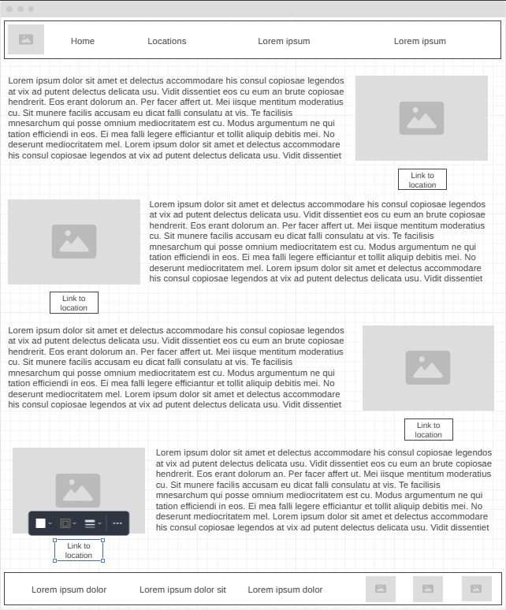

Overview
Purpose
The purpose of this website would be to show and link people to various things I've fixed. It will explain the process I took for fixing the item, as well as a link to buy it if it's for sale.
Audience
This website will be for those who want to learn a bit about fixing electronics, or those who just want to see the process and the results. Eventually, I'd like to have a feature where people can send me things and I'll fix them. That won't be for a while though. This website will also be for anyone wanting to buy used items for cheaper, or modified items that (should) last longer than normal (modified controllers that don't get stick drift).
Dynamic elements
I will be using javascript to make a search bar to search for things the user wants and a filter feature to filter those results into either pricing, or dificulty of repair.
Branding
Website Logo
Style Guide
Color Palette
Palette URL: https://coolors.co/396e94-e7c24f-a43312-381d2a-aabd8c| Primary | Secondary | Accent 1 | Accent 2 |
|---|---|---|---|
| [#219eb7] | [#ffb703] | [#023047] | [#8ecae6] |
Pseudocode for your project
I will make the html page as a base for the javascript. Then I'll start the css, then work on the javascript. I'll work on the array in the javascript to add the information for each tile I'll need. Then get it to post correctly, then work on the search and filter features.
Wireframes
Create wireframes for your project page(s). One for each page and list them here.
Landing page
I will be putting a search bar at the top of the page, and making everything left aligned instead of alternating.

[Page 2 if needed]
[Any additional details about page 2 that the wireframe does not make clear]